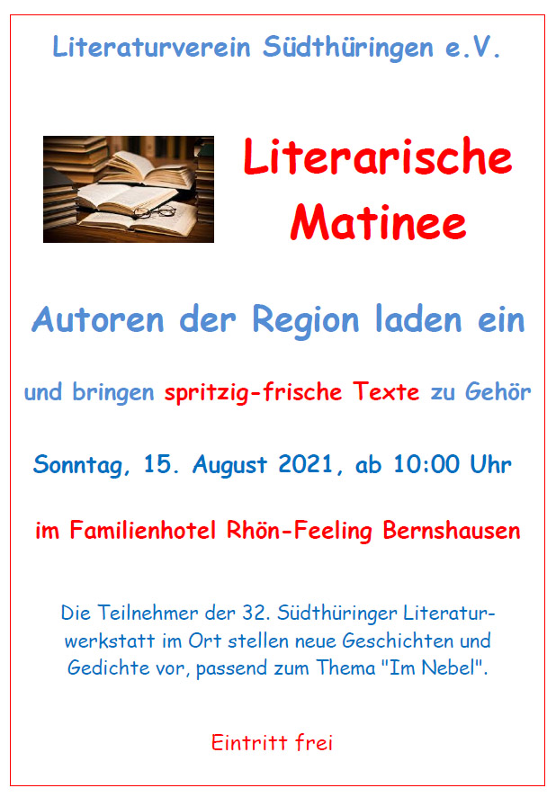

Suhl/Bernshausen. Der Südthüringer Literaturverein wagt einen Neuanfang nach dem mehrmaligen Ausfall vorangegangener Präsenztreffen: Vom 13. bis 15. August veranstaltet er im Familienhotel Rhön-Feeling in Bernshausen seine 32. Südthüringer Literaturwerkstatt. 25 Autorinnen und Autoren der Region werden gemeinsam mit renommierten Lektoren über neu entstandene eigene Texte der Teilnehmer sprechen und sich literarisch dem Thema „Im Nebel" nähern. Zum Abschluss soll es im großen Saal des Hotels am Sonntag, dem 15.8.2021 ab 10:00 Uhr eine öffentliche Vorstellung der besten Arbeiten geben.
Nach mehreren vergeblichen Versuchen im Pandemiejahr 2020 fand die Schreibwerkstatt schließlich im November digital statt. Die Arbeit am Text gibt es diesmal in den drei Gruppen Lyrik – geleitet von Daniela Danz aus Kranichfeld –, Prosa – geleitet von André Schinkel aus Halle – und Jugend, geleitet von Natalie Ewald aus Suhl/Jena. Das Treffen im Rhön-Feeling ist eine Premiere für den Verein, da das bisherige Werkstatt-Domizil, die Jugendausbildungsstätte Schloss Sinnershausen, nun leider geschlossen ist.
Die Mischung aus erfahrenen und jungen Schriftstellern der Region verspricht interessante Begegnungen und kraftvolle neue literarische Ergebnisse. Zu deren öffentlicher Vorstellung am Sonntagvormittag, 15. August, ab 10 Uhr im Familienhotel Bernshausen sind Interessenten herzlich willkommen. Die Veranstaltung wird gefördert durch die Kulturstiftung Thüringen.
